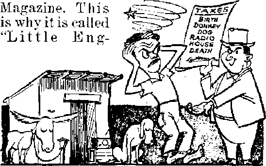

Entered as second-claas matter at Brooklyn. N. Y,. Act of March 3. 1879. Printed in U. S.A.

How a stronger WBBR serves in the public interest* convenience and necessity
As old hate breeds new violence in Burlington
Yet slow starvation stares into the gaunt faces of millions
Why did Jesus warn against it ?
THE MISSION OF THIS JOURNAL
News sources that are able to keep you awake to the vital issues of cur times must be unfettered by censorship and selfish interests, * Awake I” has no fetters. It recognizes facts, faces facts, is free to publish facts. It is not bound by political ambitions or obligations; it is unhampered by advertisers whose toes must not be trodden on; it is unprejudiced by traditional creeds. This journal keeps itself free that it may speak freely to you. But it does not abuse its freedom. It maintains integrity to truth.
'Awake I” uses the regular news channels, but is not dependent on them. Its own correspondents are on all continents, in scores of nations. From the four corners of the earth their uncensored, on-the - scenes reports come to you through these columns. This journal’s viewpoint is not narrow, but is international. It is read in many nations, in many languages, by persons of all ages. Through its pages many fields of knowledge pass in review—government, commerce, religion, history, geography, science, social conditions, natural wonders^-why, its cover* age is as broad as the earth and as high as the heavens,
'Awake !” pledges itself to righteous principles, to exposing hidden foes and subtle dangers, to championing freedom for all, to comforting mourners and strengthening those disheartened by the failures of a delinguentyworld, reflecting sure hope for the establishment of a righteous New World,
Get acquainted with 'Awake!” Keep awake by reading “Awake!”
PUBLISHED Se^ii monthly By WATCHTOWER BIBLE AND TRACT SOCIETY, INC.
117 A^amB Street Brooklyn 1T N. Y,, TT. S* A.
N. H. Knorr, President Grant Suiter, Secretary
Five cents a copy One dollar a year
Remittances should be sent to office in your country in compliance with regukLiuna to guarantee safe delivery of money. Bemiltancea arc accepted at Brooklyn trnm countries where no office is located, by International money order only* Subscription rates in different countries are here eta ted in local currency.
Notice of expiration (with renewal blank) Is Bent least two Issues before subscription expires.
ChaflW of adtfress when sent to our office may be expected effective within one month. Send your old as tfcll as new address.
Offices Yearly Subscription Rata
America, U.S., 117 Adams St.,Brooklyn 1. N.Y. $1
Australia, 7 Beresford Rd., Strathfteld. N.S.W. 6s Canada, 40 Irwin Ave., Toronto 5, Ontario SI England. 34 Crjivcp Terrace, London, W. 2 5a South Africa, 623 Boston House. Cape Town 5s
Entered as second-claas matter at Brooklyn. N. Y,. Act of March 3. 1879. Printed in U. S.A.
CONTENTS
Public Response Gives God Glory
Overtaxed Little Isle of Barbados
Press Throttled to Shield “Sacred Cow” 11
Truman Says Clergymen Superior to Jesus 11
Horrors of Erosion and Land Anemia 21
Dilemma of Population Increase
Television Invades the Operating Room 24
“Thy Word Is Truth”
OsNow it is high time to awake."—Romans 13:111/ *
Volume XXIX Brooklyn, N. Y., August 8, 1948 Number 15
WHEN RADIO GLORIFIES GOD
High-lighting a report on WBBR, a radio station of outstanding service' in the public interest, convenience and necessity
SEVEN and a half times - around the earth in one second > of time! This is the speed of radio transmission. Man himself has been able to pierce the sonic barrier, traveling faster than the speed of sound. The comparison of the speed of radio with that of sound is interestingly shown in a simple illustration. A radio wave leaving a point of transmission would reach the moon before a sound wave leaving the same point would reach the ear of a listener 300 feet away. Imagine being able to broadcast by radio to the moon, over 200,000 miles away, quicker than you could with your voice reach the ear of a person only 300 feet away.
This is an age of rapid communication, and radio is one of its wonders. Man’s ability to release electrical energy at one point in such a way as to send a series of ripples, as it were, through the air, to be received and synchronized and amplified at a point far distant, is an accomplishment far beyond, man’s own ability to fully explain.
Never before has such a potent and far-reaching instrument of communication been brought forth for man’s use. Never before was it possible for so many to become enlightened so quickly as through the medium of radio. Ruling out the abuses of this God-given medium by over-commercialism, yet the vehicle itself lends itself to the broadest of uses for the enlightenment of the greatest number of the people in general.
Today there are over 37,000,000 homes in the United States equipped with radio, with more than 66,000,000 receiving sets in those homes and other places. Over 9,000,000 autos are equipped to receive radio communication as they travel along the highways. The 66,000,000 receiving sets and the 9,000,000 auto radios are equipped to receive programs mainly from standard broadcasting stations. A standard broadcasting station is one that broadcasts on a wave length between 550 kilocycles and 1600 kilocycles. There are to date in the United States 1,696 licensed standard stations, that is, stations in operation. In addition there are 350 that have received construction permits and will be in operation within a comparatively short time, and there are 591 applications for new station licenses pending. There are only 105 frequencies or wave lengths upon which this accumulation of radio stations can function.
It can readily be seen that highly technical and accurate control of broadcast signals must be exercised by the broadcasters in order to avert listening chaos. With so many stations operating within such a limited band of frequencies, it bespeaks a marvelous advancement in broadcasting technique far superior to the old days of whistles and squeals and insufferable crosstalk.
Types of Stations and Waves
Under the present system of radio communication, federal control is essential. In order to put to full use the limited number of available frequencies, and to provide what is considered the most extensive coverage, the 105 channels are divided into three categories, for the use of three general classes of stations: a clear channel station, a regional station and a local station.
A clear channel station is one that occupies the dominant position on a frequency assigned for that purpose, and has priority on that frequency. No other station is permitted to interfere with the signal of a clear channel station day or night. There are 59 clear channel frequencies. The present limit of power to be used by clear channel stations is 50,000 watts.
highly technical means are employed, ably restrict such as directional sys
tems, which permit of the
most efficient use of the
A regional station is one whose limit of power is 5,000 watts and whose signal is protected to the limits of the regional area it is supposed to serve. Beyond that estimated limit of service its signal will suffer interference frorq other regional stations on the same channel. Various signal and power output in the direction in which it is most needed, and with a minimum of interference from stations assigned to the same frequency and also adjacent frequencies. There are 40 regional channels.
A local station is limited to 250 watts of power, and hence is expected to serve merely its own community or city.
It is interesting to note that there are two waves, or two parts to the broadcast signal, or “carrier” wave as it is called. There is what is termed the “ground” wave, which is that part of the carrier signal that in its travel is confined to the earth’s surface; it hugs the earth, as it were. Then there is the sky wave, which refers to the part of the radio signal that travels upward until it encounters that part of the earth’s atmosphere called the Heaviside layer. This is an ionized band surrounding the earth at a variable height, the average height being about 60 miles, and which prevents dispersion of radio waves into space, A radio signal contacting the Heaviside layer is refracted or deflected so that it returns to the earth at some distant point. Radio receivers at these distant points of contact are able to receive the signal from the broadcast station. Thus a radio station has listeners who receive its primary service from its ground wave, and others who are served with its secondary service from its sky wave.
Aerial view of regional radio station WBBR
Regional Stations
However, with the increased number of stations now on the air, all except those on clear channels have to eonsider-the output of their sky waves; and this is done by careful antenna design. With the comparatively low power of a local station the problem of controlling and restricting the sky wave is not so difficult and does not involve any great expense. But with the power output of 5,000 watts enjoyed by a regional station the problem becomes more serious and entails considerable expense.
Complicated directional systems are employed, so accurately designed that the signal can be sent in any permissible direction, or can be suppressed in the direction to be protected. A regional station may have to protect stations on its same frequency, for example, to the northwest, west and southwest. This can be done by erecting a properly designed “antenna array”, as it is called. The antenna array in this case would have to take into consideration the frequency of the station’s carrier wave, its power output and its geographical relationship to the stations to be protected.
Comparative coverages of the old and the new WBBR. Along the outer edge of the shaded area the signal is a good, serviceable signal. Local conditions might prevent^ a few within the area from hearing the station, but many outside the area can tune in satisfactorily. In fact, listener response shows a more substantial increase of power than indicated by the above advance computation.
placed in rela
tionship to each other in positions deter- Truly a miracle of the age!
mined by the directional requirements of Regional stations in the main started the case. With all the electrical com-, with a maximum power of 1,000 watts, ponents correctly designed and put into Within the last few years it was consid-place at each tower base, then the power ered that regionals could serve more is transmitted to each tower. The power efficiently with an increased maximum going to one tower differs from that going to a second or third tower. Then again the timing is controlled until the power going to number one may be a millionth of a second ahead of the pow-
It would re-quire, as one method, three steel towers insulated at their base, of mathematically cor-rect height, spaced just so far apart and er going to number two; number three may be a millionth of a second behind number two. All these varying factors are calculated first on paper according to definite highly specialized radio-engineering principles, and then put into design in the careful construction of the towers and the phasing equipment.
Accurate signal intensity measurements have to be taken some miles from the transmitter in various directions and with scientifically calibrated measuring equipment in the hands of consulting engineers who specialize in such work. These field strength measurements make possible the preparation of charts so arranged as to show proof of performance in the establishing of the directional pattern the Federal Communications Commission, the licensing body, requires of the station. So accurately calculated, so cleverly designed, are directional systems today that a multiplicity of stations can function within this area of the United States with a maximum of service and a minimum of interference.
power of 5,000 watts. But with the increased power came the danger of interference between stations on the same frequency, hence the coming into vogue of the directional system for general use among regional stations.
It is to the advantage of the radio station required to use directional effect to locate its transmitting site between the point or points to be protected and the area it is most desirous of serving. The reason for this is that there is a most desirable economy in the establishing of a directional pattern. The energy that is suppressed in the one direction is not lost, but is made to augment the power of the signal going in the maximum direction. Hence a 5,000-watt power output can be so arranged through the directional system as to throw a signal of approximately 30,000 watts in the most desired direction; and herein lies the economy of a directional system. This electrical phenomenon, when employed to good advantage, permits regional stations to serve the primary area with maximum efficiency and yet at the same time protect those stations broadcasting on the same frequency.
Radio occupies a distinctly unique position in the realm of communication today. To be able to send forth vital information from a central point and to have that information carried to its destination, the radio receiver, with the speed of light, is a marvel beyond human comprehension. And then to know that that same information can reach the receptive hearer, in his home, at his bedside while confined in sickness; up there in the loneliness of the little back room; in that diner by the roadside as he stops for a hurried snack; in the auto as he travels through the country; in the hospital, in the office, in the workshop and ’way out there on the high seas, anywhere and everywhere that a radio receiver can be used.
Radio Put to Highest Service
It is well known that reception of information by the ear is readily remembered because of the one dimensional reception, the hearing alone, and the extra concentration exercised by the hearer. Also the listener has put forth a conscious effort and of his own volition has sought out that to which he is prepared to listen, and thus measurably removes an obstacle of initial caution or prejudice. Beyond doubt the radio provides a powerful means for conveying information effectively to the minds of those the sender desires to reach and influence. And while this is true regarding general information, it is doubly true concerning the most vital of all information.
There is one radio station, and only one, that is dedicated to the broadcasting primarily of the Kingdom message, in the public interest, convenience and necessity. For twenty-four years it has served its listening audience “without money and without price”, with Kingdom instruction, timely and important information and the finest of good music. This station is noncommercial and carries no commercial announcements of any sort. It is dedicated to the service of the Most High God, Jehovah, and His King, Christ Jesus, and the Kingdom. It has proclaimed the message of that kingdom as the only hope of the world, without compromise, for this last quarter century.
Its voice, while consistent in its message, has been restricted in its power. It has served these many years as a regional with 1,000 watts. But today witnesses a tremendous forward step as WBBR, Staten Island, New York, owned and operated by the Watchtower Bible and Tract Society, Inc., expands with increased power, and so much so as to permit this unique station to take its place among the major stations in the great metropolitan area of New York. The comparison with other stations is only in the matter of wattage, signal intensity. There is no comparison in the matter of its dedication to serve the Most High God. In that position it stands alone.
In going to higher power of 5,000 watts and thus being required to effect a directional pattern, WBBR finds itself in a most fortunate position. Its transmitting site has for these many years past been on Staten Island. It is required that WBBR protect stations sharing its frequency to the northwest, west and southwest. This places the transmitting location directly between these stations to the west and the great metropolitan area to the northeast and east. The required directional pattern finds WBBR, with its increased power of 5,000 watts, transmitting a signal to the northwest, west and southwest not of less strength than before and much clearer in tone, and in the desirable direction of north and northeast a greatly increased signal approximating 30,000 watts.
Coverage Area of WBBR
And so for the first time in its long service it is able to do more justice to the vital message of God’s kingdom so necessary to all people of good-will throughout the great polyglot area of metropolitan New York. The great difference between the old field pattern and the new of WBBR is seen in the contour map. (Page 5) The smaller contour shows the limit of what was considered a good signal with power output of 1,000 watts. The larger contour shows the much greater area covered by the same intensity of signal. It will be noted that with the increase to 5,000 watts with directional antenna the contour of the excellent service area of WBBR has been greatly extended north, northeast and east, with the maximum intensity directed toward metropolitan New York.
It was Christ Jesus who stated, ‘This gospel of the Kingdom shall be preached in all the world, unto all nations, for a witness.’ At this great crossroads of the world can be found representatives of all the civilized nations. On the island of Manhattan, on the banks of the East river, will stand the headquarters of the United Nations. This is the organization hailed by the religious leaders as the ‘political expression of the kingdom of God on earth’. It seems most fitting that amid the many-tongued claims that hail this man-made organization as the great vehicle of peace, there should stand out in contrast the clarion voice of the message of God’s appointed instrument of peace, His kingdom under His beloved Son and King, Christ Jesus. ‘This gospel of the Kingdom’ must be, published as a witness in the official ears of the representatives of the United Nations. WBBR now occupies that enviable position with its new and powerful voice beamed in that direction, for the maximum power of the signal of WBBR strikes directly through the very center of the future location of the United Nations situated in the heart of metropolitan and polyglot New York.
But the service area of this station of good news is not confined to metropolitan New York; it extends much farther. During its regular broadcast schedule at periods between the hours of six-thirty in the morning and eight o’clock in the evening it serves a listening audience throughout New Jersey, Connecticut, eastern New York and eastern Pennsylvania. In its all-night broadcasts between the hours of 1:00 a.m. and 6:00 a.m. it has received responses also from listeners throughout the New England states, Quebec, Ontario, Illinois, Kentucky and Iowa.
There are radio stations aplenty, Standard, FM, Television, each vying for listeners’ support and patronage; but there is only one broadcasting in the public interest, with but one purpose in mind, the making known the name of the Most High God, Jehovah, His anointed King, Christ Jesus, and the Kingdom as being the only hope of all men of goodwill of all nations. The response it receives from its listeners cannot be measured in dollars and cents, but in the grateful appreciation of those who by its broadcasts have been brought to know and to serve Almighty God.
Public Response Gives God Glory
From a large hospital on Staten Island came a letter from a physician in attendance. Many young men were there under his care, suffering from the horrors of war. They were shell-shocked, torn, maimed and nerve-racked. Said this physician:
Thank you, gentlemen, for your excellent programs. They are soothing and delightful;
TO use them as part of our therapeutic treatment for our shell-shocked boys.
From one whose time is spent in taking the message of God's kingdom to such ones conies this inspiring report:
It has been my privilege to witness to the incoming Kingdom in one of the large TB hospitals, I am sure it would give you great joy to see and know how many of those poor sick creatures arc listening in, . . , So many have told mi? how much hope and comfort they have gotten from it. 1 am convinced; by their expression of joy and hope they received through the radio message, that many that have passed out Jehovah will keep in memory, I trust the radio work will go on with greater power than ever before.
In those perilous times, when men’s hearts arc failing them for fear and the clouds get blacker with each passing day, many are the troubled ones who are seeking some haven of safety. Note the gratitude of this listener (and realize that this is merely a typical case, there are many such):
Only by Jehovah’s grace and His loving-kindness in using the radio, I can say is the only reason that lam alive today, 1 had made up my mind not to go on any longer in this wicked world. One day I happened to tune in to WBBR and heard a discussion about the end of the world. Scriptures were given in proof and later I looked them up and I said. So the Bible is right! If it be Jehovah's will, I hope to see this wicked system go down and God’s kingdom, The Theocracy, in its place and, through it, the name of Jehovah vindicated.
Honest confession came from one grateful listener:
Your station is the? most valuable station on the radio; everything else they could take away from our radio, but the truth. The Watchtower program is essential to me. May your work go on and may it be for the blessing of the meek and to the honor of our great God, Jehovah.
We are witnessing today the fulfillment of the prophetic statement of the apostle Paul to Timothy; “For the time will * come when they will not endure sound doctrine; . . . and they shall turn away their ears from the truth.” (2 Timothy 4:3,4) But while this is true in general, here is a notable exception:
You want to know why I started listening to yqur programs on WBBR? IT1 tell you. I was an atheist and had turned against religion and to do so I had to learn what religion taught. I began to listen to religious programs on the radio. When I first heard your program I was hostile toward it because I hated all religions and thought it was a religion. Upon learning more about them I liked your programs. I still lacked faith in the Bible and considered it fiction. One day I heard you discuss the prophecies that were fulfilled since 1918. After reading your Bible-study helps I began to believe the Bible.
Any radio station whose programs can develop in the heart of the listener a deep gratitude to the great Creator must be recognized as operating in the highest public interest. Here is a case to point:
With deepest gratitude to Jehovah for His loving-kindness in granting my request to be able to hear WBBR, I am writing this letter. By hearing the glorious message ot Jehovah's Theocracy by Christ Jesus, His anointed King, I have come to a deeper appreciation of the Bible and the purposes of Almighty God. It has awakened me to greater privileges and responsibilities. May Jehovah’s rich blessing continue to be upon you, as you send out free education to men of good will.
The three high towers of WBBR are illuminated at night with standard flashing beacons for the guidance and safety of airplanes in the night. Far out to sea these flashing beacons can be seen by ships approaching the harbor of New Y'ork. WBBR on the records of the Civil Aeronautics Association is designated “'a true light”. Tn its unique position in this great metropolitan center in the midst of millions of earth's population it is proving to be in truth and in fact “a true light” to the glory of the Most High God, Jehovah, the “Father of lights”.
ZOO !
r | ItlE tiny island of Barbados shoots I up out of the Caribbean sea. From the air one can see over the entire beautiful, small, flat island, of pure coral formation. Tn size if. is only 21 by 14| miles* It has an area of 106,470 acres, or about 166 square miles. The census of 1906 showed the population to be 196,287, making an average of about 1,180 persons per square mile. It is believed to be much greater now, although the latest census showed less* Many say it is not authentic, since certain ones do not want the true figures revealed, as overcrowded population reduces labor wages. It is said to be one of the most densely populated areas in the world.
There is much contention over the name Barbados. According to sixteenthcentury maps it is rendered St* Branar-do, Barbudoso, Barmodos, Bernados, and Barmodo. It is believed that the name Barbados is from Spanish and means “hanging branches”, while other authorities say it is Portuguese and means “bearded fig-tree”, which was the name given it by the Portuguese because of its being bearded like fig-trees.
Barbados is outstanding among all the islands of the West Indies. It is famous for its beautiful, glistening, white-sandy beaches, with clear blue-green waters. The writer has never seen such beautiful natural beaches anywhere in the United States or on any other island visited in the West Indies* It is said that it will arrest old age.
When first discovered it was inhabited by the Carib Indians, later by Portuguese; then the British colonizers landed, in 1605, in the “Olive Blossom”, and took possession of it in the name of King James 1. In 1628 64 English settlers arrived, and Charles Wolfcrstone was appointed to be its first governor. Of its total inhabitants nine-tenths are of the pure African race that were imported by the British as slaves, while the other tenth is of the pure white race from England and Scotland.
On the whole the people are very gentle, mannerly and clean, including those of the African race* The moral standard of the people is far higher than that of the American people- It is noticeable that the children are much more submissive to parents, while adult and child delinquency has not reached such a high tide. One of the reasons for this has been attributed to the place’s being so small and crowded. Every person can keep up with his neighbors' activity and will quickly dismiss such from respectable society unless he is a near spotless character.
The people live very tight and rigid lives. While they are very nice and hospitable if met in their homes, yet if you met the same person on the street you would get a quick little diplomatic bow but never a conversation. Most of the men always carry a “valise”, which contributes to a business appearance. Even most teen-agers carry one and walk with as cold, frosty air as Sir Stafford Cripps, of Engl ami, as described in the New York Times
land”, since the people are very zealous not to depart from English customs and ways of life. When talking to those of the higher social bracket and introducing some other character into the conversation, it is not uncommon for the person to say, “Wait! now, who is he? Oh! that person,” then immediately change the subject. This means that either the person has married outside of his social caste or financial equal or has a black spot somewhere in his family record.
Even in this little island politics is highly developed and brightly crystallized. The local government is made up of a governor sent down by the English Crown, an executive council, a legislative council of nine nominated members, and a house of assembly of twenty-four members. They always follow the English political trend and policy. Now the Labor-ites are running the local government with a “prime minister”.
Taxed from Birth to Death
\A.dditional taxation is the order of the day. It cost heavily to b® born. As soon as you arrive you are covered with taxes and surtaxes. If your child wants a pet dog, or even if it is a raw-bone, mangy creature, the government says, “Look here; give me $1.20 a year tax” ; then you can keep the poor creature. If you are fortunate enough to own a bicycle you must pay a tax; if a donkey, it is taxed; or if a two-wheel cart, you must pay a tax according to the number of wheels. If an automobile, which is the greatest of luxuries, it is taxed from end to end, with gasoline taxed so heavily you must pay fifty cents a gallon.
If you own your own home, you pay ownership fax; if you rent it out, the renter pays an exorbitant rent twelve months a year, then the government says to the renter: “Now you have paid the owner rent for twelve months to live in the house, and the owner has paid me an ownership tax; now, to live in it any longer you must pay me a month’s rent,” called “occupancy tax”. If you own h radio you must pay a tax to turn -it on.
But wait—the poor man is going to die some day and then we can’t tax him. Let’s charge him to die. So, on goes the “death duty”. If you own property, even personal property such as jewelry or fine clothing, and if you don’t know several years in advance just when you are going to take your leave of this life so as to deed all this to some other person, when you do die then all this is valued and a certain percentage is taken out called “death duty”.
You niust pay for a coffin, burial ground, high funeral expense, clergy fee, and, if Catholic, a “purgatory” fund. Then, if you can’t leave your wife or children a good-size inheritance, society looks on you as a poor creature who never amounted to much. Yet the government treasury is always empty. It can’t even build a harbor, this island’s greatest need, because of insufficient funds. The streets are filled w’ith beggars with the stare of hunger in their eyes.
Some capable men started building a fine hotel with the purpose of advertising Barbados’ beautiful’ beaches and all its assets for a vacation resort, to attract American vacationers. During the war the Americans built Barbados’ only airport. Now American planes are not permitted to land here. The hotel project was blocked, cutting off a fabulous source of income for the island.
A leading chemist of the island reported that in the early part of 1947 the custom control officers would not permit them to order the “wonder” drug, penicillin, from any place except the firm of M & B of England at $27 per 300,000 units. Soon England could not supply it. The chemists demand the drug, since other firms, such as P & D, in the United States and Canada were anxious to supply it. The board made some concessions. Now the American firm is supplying the same drug, the same quality, the same amount of units, not for $27, but for
84 cents! Quite a difference in price.
As for agriculture, instead of tractors and steel-beam plows, the oxen and hand spade are about the most advanced implements used to till the soil. As for road-building and construction, instead of caterpillars and bulldozers, a host of women with baskets on their heads are employed to move rocks and dirt to the construction center.
The proud little isle of Barbados pays and pays and pays, but, with all the intensive taxation, no funds are available to finance modern progress. Poor little overtaxed Barbados!—Awake! correspondent in British West Indies.
----a-
Press Throttled to Shield, “Sacred Cow”
Last January the board of education of Newark, New Jersey, banned the Nation magazine because of articles called anti-Catholic. On June 23 it became known that the board of superintendents banned this same magazine from New York public schools, and for the same reason. The ban was justified by Dr. Jansen, superintendent of ^schools, on the ground that the articles “contributed to religious animosity by going into matters of faith and out of the realm of politics or social controversy”. The articles discussed the Roman Catholic Church and Fascism, censorship, science and democracy. The Catholic Hierarchy invades all fields, yet carries along her religious cloak and from behind its folds recklessly screams ‘intolerant bigot’ at any who disagree with her.
The writer of the controversial articles in The Nation, Mr. Blanshard, replied to the censorship pointedly, and said, in part: “The board of superintendents has vividly illustrated and confirmed one point in my articles, that the censorship system of the Catholic hierarchy is already restricting intellectual freedom in our public schools. If I am anti-Catholic, then there are millions of anti-Catholic Catholics in the United States who are just as much disgusted with the social policies of their priests as I am.”
But even if the articles delved into matters of faith, is Jansen’s ban American? Does the American constitution guarantee free speech only in social and political fields? Can’t Jansen recollect that it also guarantees freedom of speech and press in the most important field, that of worship? Moreover, does Jansen not know that Catholic publications spew out vituperation and venom against other religions? That these increase “religious animosity” yet are found on shelves in school libraries? Could Dr. Jansen enroll in one of his school courses to learn about constitutional guarantees?
Truman Says Clergymen Superior to Jesus
*3? Recently a new postage stamp was issued to honor “heroic” deaths of four chaplains. These four army chaplains were supposed to have given their lifebelts to soldiers when their vessel was torpedoed, and locked arms and chanted prayers as the waves swallowed them into a watery grave. But the reports are conflicting and unauthenticated, according to the Freethinkers of America. They demand withdrawal of the stamp “in the name of truth and honesty” because “official investigation confirmed the adequacy of lifesaving equipment and that the chaplains, two Protestants, one Catholic and a Jew, did not give away their life jackets”. What deceit is possible when fawning politicians manufacture heroes of clergymen to grab the religious vote!
When these stamps honoring these questionable heroics were issued, President Truman bleated: “The greatest sermon that ever was preached is right here on this stamp.” Greater than Jesus’ Sermon on the Mount? Greater than Jesus’ ransoming death? Alas, what stupidity is possible when the tongue wags while the brain rests!
day’s utterances were more than merely muddled; they were exceedingly dangerous. [Burlington Daily News editorial]
CXXXZZXXXXXXZX3 Burlington misuses *‘I Am an American Day*’ celebration as a springboard to launch mob action against freedom
rrmTimiim
‘‘THE shameful display of bigotry and ruffianism as shown in the attack on' a small religious sect should make every Vermonter blush/
The evident fact that the mayor of the city fanned the flames and the police did nothing to curb them should make us all stop and think?' So spoke a chagrined Vermonter in the “People's Forum" of the Burlington Free Press, May 26, 1948* And listen to the other voices that joined his:
I certainly didn’t like the idea of the mayor fanning the flames in his talk on the American Day program a little while before the riot* That kind of demagoguery burns me up* It’s not good Americanism. [Earl Deni eorc, Lions Club president]
At this tiro** I learned of the mayor’s American Day speech in which he rabble-rtfused against the Witnesses. [Capt. Rudy Smith, National Guard officer in charge of the armory]
It is strange that Mayor Burns should have picked an American Day rally to air his ignorance, or plain disregard, for the fundamental principles of American freedom. * * . The next time Mayor Burns stands up before a crowd, “representing the veterans of World War II/’ this is one veteran he isn’t representing, jf you please* [From public opinion column in the St. Albans Daily Messenger]
Many persons are also turning their criticism toward Mayor Burns for his intemperate utterances at the I Am an American Day ceremony in Battery Park the same afternoon* It is certainly true that this was just one more sample of the bleatin gd^efore-thinking for which the mayor is noted. . ,But Sun
The ‘dangerous utterances' were made by John J. Burns (until recently mayor of Burlington, but now its postmaster) on Sunday, May 23, and apparently precipitated the mob violence that followed at the armory, where Jehovah's witnesses were holding Bible meetings. In his “patriotic" sermon the mayor demanded to know what the veteran war dead would think “if they knew the same building from which they departed to battle for the flag had been leased by an hgent of the State of Vermont to an organization that refuses to salute the flag". The result of this rabble-rousing was mob violence against freedom of worship, a real insult to the flag and i?S lofty principles*
Moreover, this new violence was bred by old hate. Of the ex-mayor the Rutland -Herald said: “The history of his feud with the Witnesses is pretty w;ell known. He has clashed with the sect before. His antagonism toward them and their faith has been aggressive" Not only aggressive, but lawless. In years past he has violently snatched petition sheets from their hands, thus denying them the constitutional right of petition. On different occasions he has ordered reluctant policemen to seize and forcibly eject from town two women, Jehovah's witnesses, because they presented Bible lectures^ and literature. Repeatedly he has caused the Witnesses to be herded into the police station for grilling by himself and police officers, though innocent of any wrongdoing. Now his long-standing hate has ignited new violence*
The Violence Bred by Old Hate
Jehovah’s witnesses had scheduled a three-day assembly in Burlington for May 21-23, and obtained the state armory for assembly. On May 22 the Witnesses invited the public to attend a special Bible lecture on the afternoon of Sunday, May 23, and this they did by distributing handbills on the streets. This activity brought forth some blustery threats, and pressure was applied on armory officials. It was generally known around the city that rabble elements were brewing trouble.
Sunday afternoon, and the Watchtower representative, T. J. Sullivan, begins his address to the 350 persons assembled, many of them Burlingtonians of good-will. Then three men and two women enter. They are recognized as ones active in molesting the Witnesses for two years past. Soon about seven young men saunter in and join them. Ushers take up near-by posts as a precaution. All this while the speaker discourses on Christ Jesus as the permanent Governor of all nations, showing from the Bible prophecies that only Christ’s kingdom can bring relief to suffering humankind, and that it will bring full and glorious relief and deliverance soon. Such knowledge is as a sweet-smelling perfume in the nostrils of men of goodwill, but to deluded opposers it is as a stinking stench of death. Centuries ago a minister of God, the apostle Paul, showed how the spread of this knowledge would be received by these two classes:
Wherever I go, thanl$ God, he makes my life a constant pageant of triumph in Christ, diffusing the perfume of his knowledge everywhere by me. I live for God as the fragrance of Christ breathed alike-on those who are being saved and on those who are perishing, to the one a deadly fragrance that makes for death, to the other a vital fragrance that makes for life. [2 Corinthians 2:14-16, Moffatt translation]
To Delore “Curley” Nolin the knowledge of Christ as permanent Governor was a stench to his nostrils, for during its presentation he rose and shouted to the speaker, “Shut up! You stink!” Obviously, he meant that to him the message of Christ’s kingdom was a stinking one, as he knew nothing of the speaker personally. It was the signal for general heckling from the handful present having a similar sense of smell, in which group of rowdies were Delore Nolin’s father, Leo Nolin, Sr., and his two sisters Maria and Amelia.
Quick action ensued. Nolin’s cry had barely died on his lips when he was lifted bodily by an usher and headed for the exit. The other ruffians jumped up to interfere. One infuriated hoodlum struck the usher on the head. Other ushers were punched by the disturbers. Even the two girls of the gang kicked and clawed. But prompt action by alert ushers ended the heckling as abruptly as it began, and in a few minutes the hoodlums were on the outside. The meeting successfully concluded. From the first heckling to the programed conclusion some three hours later, every scheduled feature of the sessions was held.
But all this while the mob outside gathered strength. The police had arrived, and by the end of the session had managed to open a corridor through the crowd now numbering between 300 and 400. Out through this gantlet of raging, roaring, jeering, cursing humanity the Witnesses marched shoulder to shoulder, paying little notice to the braying of the mob, as silent to their stupidly false taunts as the Israelites were to those hurled at them by the Jericho-ites before the walls tumbled down. In a public statement the next day the National Guard officer on duty at the armory, Capt. Rudy Smith, declared:
Yesterday’s mob proceedings were the worst I have ever seen. The inhuman yelling and cursing of the mob caused one of the Wit-nessea, *an elderly woman, to have a heart a, tack which necessitated medical aid. The second floor of the armory was crowded with young children who were panicky with fear while mothers tried desperately to console them. All in all, it was a sight I had never expected to see in Vermont
It was at this time that Delore “Curley" Nolin played another leading role, adding assault and battery to his attempt to incite riot. The attack is stated in the report that went to the Department of Justice, in Washington, D.C-:
One Witness, an usher who took a. main part -in the evicting of the hecklers, Charles R. Siegriest, started out the rear door as had many others ahead of him, only to find it necessary to jump back inside and lock the door quickly as several mobsters raced to attack him, shouting his name. By the time he had turned and reached the front door, the main group of Witnesses had walked out between ’the jeering mobsters and driven off, leaving him as one to 300 or 400. As he came down the steps, one Delore “Curley” Nolin, the one who had previously screamed “Boo! You stink!” jumped out from the mob and struck C. R. Siegriest. This acted like a signal to the whole mob, who immediately surged through the police lines and struck, pum-meled, beat, kneed and kicked Siegriest even in the face, jeering and cursing as he raced for his pick-up truck parked at the rear of the building* They tore at his clothing, ripped off his hat, tie clip, and usher ribbon, threw a shower of rocks to break one of his truck windows, and ripped off a canvas in the back as Siegriest roared away. When he arrived home he had a black eye, a lump as large as an egg on his right cheekbone, and smaller lumps on neck, chin and forehead, besides many body bruises.
This violence by the Nolin family is also bred by an old hate. In addition to Delore Nolin’s attacks, his father and sisters grappled with the ushers trying to restore order in the armory, Leo Nolin, Sr., has for the past two years accosted and insulted Valeria Grey as she engaged in street-corner distribution of the Watchtower and Awake/ magazines circulated by Jehovah’s witnesses. The day before the riot he insulted Witness Paul Piche as he performed similar service on Burlington’s streets. His venom has been particularly hateful against exCatholic Naomi McKnight, now a Witness, because she removed her little girl from Nolin’s home, where she had previously boarded her. His persecution of this woman grew to such proportions that she, had to engage a local attorney to write Nolin a warning that if he did not quit his molestation he would be prosecuted. Nolin’s tactics were even espoused by Vermont’s Catholic Action paper, Our Sunday Visitor, and an editorial tirade was spewed out at the Witnesses. It added fuel to the smoldering hate that finally burst out into blazing violence, on Sunday, May 23.
Police Failure to protect
Where were the police while the mob had Siegriest down beating him ? Press photographs appearing later in the
Burlington Daily News show Police Chief Frank Raymond and other officers standing idly by ’watching the tangle of mobsters atop Siegriest. They belatedly assisted Siegriest in getting to his truck. Burlington Free Press reported that “Chief Raymond had stated that he would like four or five more men on the force but that the detail of six officers sent to the scene handled the Sunday affair well and adequately”. “Well and adequately" for whom, Chief Raymond ? The Free Press did not agree with you, when it said, editorially, May 26:
According to the statement of National Guard Captain Smith, it was known by the mayor and the chief of police for some hours before the rioting [15 hours before, according to Smith] that there might be trouble at the armory.... The question then is why more police officers were not on hand to keep order.
Nor does the Daily News of Burlington agree with you, Chief Raymond, th At a situation is handled “well and adequatelywhen a man is beaten by a mob as police look on. Qn May 26 it said, editorially :
That the local police made no arrests here following the riot is shamefully similar to lynchings in the South where local authorities often fail to take action. Surely there were a number of persons involved directly, and the policemen on hand at the state armory were responsible to seize those immediately concerned, Many persons are wondering why the police, who as early as Saturday had reason to fear trouble at the armory, did not bring a police car up the armory driveway to the doorway and take the Jehovah witness leader [Siegriest] to safety*before the mob could get at him. The answer to this one is something the public should know. Many are also won* dering why the police were dispatched to the scene of a possible riot without being armed with night clubs. The lack of any precautionary state police help is another question that deserves an answer.
On May 28 the Free Press added:
Citizens who are really concerned about enforcement of law and order are not likely to be satisfied with the statement of the chair* man of the Burlington Police Commission [Rene Boucher] that “the police did just what I would have wanted done, in handling the disturbance at the armory grounds Sunday’', If he really means that, and he is going to continue to exercise authority as a police commissioner, Burlington citizens who do not feel competent to protect themselves in a crowd had better hire body guards or stay 'away from crowds, , , ,
The statement of the chairman of the Police Commission says it would have taken a squad of 50 or 60 men to handle the excited crowd, estimated at around 300 persons. That is a matter of opinion, A resolute'officer armed with a club (why were not the police so armed that day?) can usually convince quite a number of unarmed mobsters that the law should be obeyed.
There are 33 on the Burlington police force. Also, Section 116 of the City Charter provides the mayor power in emergencies to “commission as many special policemen as he may deem necessary, who shall have all the powers of regular members of the police force”. Chief Raymond said Sunday's outbreak did not necessitate calling out even the regular police force, as most of the crowd were “curious spectators”. That is doubtless true, and if the six policemen present had been active and not merely a part of the “curious spectators” the handful of violent mobsters under Delore Nolin’s lead would not have harmed Siegriest. Also perhaps they could ha^e made a few arrests among the few aetiial mobsters.
And while dealing in excuses, we might as well give ear to ex-Mayor Burns' penetrating view. It is a sad mixture of coy naiveness and cowardly buck-passing. He said: “I don't know who did it, do you ? It might have been perpetrated by people from out of town. I know there were a lot of folks down from Canada yesterday.” The result of thia asinine cowardice was that Frank Davis/presi-dent of the North End Chamber of Commerce, apologized to the Canadian people for this slur against them. An offended Canadian wrote to publisher William Loeb of the Daily Hews of Burlington apd complained about Canadians’ being classed as mobsters because Burlington 'lias a flannel-mouth for a mayor”, and added: “A few well-chosen words at the right time, by some stupid egoist like your Mayor Burns, can raise havoc such as witnessed last Sunday,” In a signed editorial publisher * Loeb said, “We apologize for our foolish and ill-mannered mayor/”
To discourage further mob violence and preserve some semblance of free worship and assembly in Burlington, legal steps were taken on May 25 when complaints were lodged with Deputy State's Attorney Nicholas A, Morwood against the mobsters. Four persons were named in particular, and charged with
"breach of peace, profaning the sabbath, assault and battery, inciting a riot, and trying to break up a Christian meeting”. During the ten-day investigation that followed seven Vere arrested. Three, Everette Ratta, Richard Rivers and Robert Stanley, pleaded guilty to breach of peace charges and were fined $25 and costs. Four, Delore Nolin, Donald Barrows, Kenneth Irish and Ernest Dorey, pleaded not guilty and in June were out on bail, awaiting jury trial. Nolin is the one specifically charged with assault
Vermont Public Opinion
Concerning wicked men th£ Bible states: “Are they ashamed at their abominable deeds? Not they! They know not how to blush.” (Jeremiah 6:15, Moffatt} But there are many honest-hearted and fair persons in Burlington and other sections of Vermont that can blush, and are blushing. Different newspapers carried much public opinion about the lapse into mobocracy. The following extracts give the prevailing sentiment:
It is also shameful and debasing. It throws mud on our state's reputation. . . . Ah true Americans must feel as chagrined as I do. ... We who have been so proud and happy because of our Vermont traditions should bow our heads in shame. ... It was much more un-American than the organization against which it was directed. . . . You can imagine the feeling of shame, disillusionment, and anger which I felt upon reading the news that a mob had reared its ugly head. I wonder which was the more un-American gesture —the refusal of a few individuals to salute the flag because of certain religious beliefs or the usurpation of the law by a mob of cowards aroused by irresponsibles. . . . Where in the 'Constitution of the U.S. or in the Holy Bible does it say that it is a crime npt to salute the flag? ...
Saluting the flag is a ritual and a symbol; it is not a law. It is all too easy to salute thp flag. The hard part is to uphold the things for which it stands. People who do not believe in the rights of others are far more dangerous than a few members of a religious sect who feel it a sacrilege to worship a flag. . . . I am not acquainted with the basic beliefs of Jehovah’s witnesses but I think that they are sincere in what they- believe and will not do this country any harm; not nearly as much as the mobsters who attacked them. ... If they won't salute the flag, but will try to live up to what it stands for in every way that their consciences will let them, so what if they don’t salute? The mob of people who attacked them is the real concern to true Americans interested in preserving the principles we supposedly fought for. . . . Patriotism is not merely a superficial gesture such as saluting the flag ■ it is the conscientious practice of liberty and tolerance.. . . Probably most of those in the mob that made a spectacle of itself last Sunday would find It difficult to understand that while Jehovah's witnesses only refused to salute the flag, the mob insulted it.
Need more actual quotations from the published expressions of the public be reproduced here? Plenty more are available, but they run in similar vein of shame and indignation. If the ex-mayor, John J, Burns, is not blushing, and if the police commissioner and police chief and other officers are not blushing, and if the Catholic mobsters that shouted “Hail Mary” as they were being ejected are not blushing, it comes as no surprise to Bible students familiar with the scripture that such doers of abominable deeds “know not how7 to blush”. The encouraging fact is that many in Vermont are blushing because of the shameful fruit of niobocraey.
From all over the state letters are coming to Jehovah's witnesses. Persons of good-will are requesting literature’ concerning their Bible beliefs. They are rt^questing that ministers of Jehovah's witnesses call at their homes to explain to them the scriptures concerning these 'perilous last days'. The mobocrats failed in their hateful purpose to destroy free worship. The only result of this new violence stemming from their old hate was to make honest Vermont blush.
OTHER nations may boast of their mass production of autos or armaments, but the people of Chile excel in the mass production of angels. Of course, their manner of producing angels is a little different from the method of Jehovah God.
It all began years ago when the country was under the domination of the wealthy Spanish landowners and the Catholic church. Many of the poor in-quilinos (farm workers) were descendants of the illegitimate children of the Spanish conquerors and Indian women, and, consequently, they had no legal rights in the land. These poor people, called mestizos, were the laborers on the large haciendas or fundos that occupy the major part of the fertile central valley of Chile. For them it was a life of servitude filled with drab routine from morn to night, with only their wine do lighten the week’s drudgery.
The usual farm worker lives in a small one-room adobe hut with a thatched roof and a stone-hard adobe floor. The only light in the dismal room comes from the open door. Children sleep on filthy straw mats on the floor. The few chickens and pigs have the run of the house. All water, whether for drinking or washing, is taken from a near-by irrigation ditch. Many times the children and animals use the floor of the one-room house as their toilet, when the mother is busy cooking on the out-
door fire or even when she is working inside the house.
Although the farm worker has a small garden to grow a few vegetables for his family, there is not much variety in the diet of the children. They live mainly on soup and on heavy lumps of bread only slightly raised with yeast. The entire family drink their mate out of the same tin cup through a long nickel tube with a perforated bulge at one end. The children run around in bare feet without any protection during the cold rain, but their fathers have hunks of automobile tires fashioned into sandals for their stockingless feet, and instead of a coat they have over their shoulders a blanket with an opening for their head.
Living under such primitive conditions with little or no hope for an improvement, it is no wonder that the people turned to the manufacture of angels as the release from their sorrows. The teaching of their church inspired them to take up this specialized form of activity. It furnished an exciting change to the monotonous routine of their lives. Although recently some efforts have been made to check the mass production of angels, it is still the principal occupation of the lower class.
In most families there is a new child every year. This is due to the confused teaching of the Catholic Church. Although the priests convey the idea that the first sin of Adam and Eve was their knowledge of sex, nevertheless the church has emphasized the necessity of using this sex knowledge for the continuous production of children. Because of the close quarters in which the family lives, not only the parents but sometimes even the children themselves produce more children. Then it is a question of the survival of the fittest. Only the strongest babies can survive the rigorous, unhygienic conditions of the first year of life.
This opens the way for the production of angels, and each family has a special pride in the number it can produce. There are three classes of angels manufactured: (1) the babies that die before seeing the light are transformed immediately into cherubim;'(2) those who are born alive but die before sucking their mother’s breast become seraphim; and (3) the children that die after taking their mother’s milk are called angelitos (little angels). It is all done very precisely, and the little angels are shipped directly to heaven.
Instead of going in mourning for the death of these little ones, the families use the occasion for a fiesta. The tiny body is laid on the table under whatever covering is available and it is surrounded with flowers and candles. The neighbors are invited in to drink, sing and dance. Sometimes the dead bodies are kept for days while the celebration continues. On occasions the body of the angelito is loaned to another family for further rejoicing in that home.
At the end of the celebration the father takes the angelito in a box or urna and carries it on foot followed by his friends, usually only men, to the cemetery. The friends carry the flowers in their arms. The families who have more money hire a vhite hearse driven by attendants dressed in white and drawn by white horses covered with white-tasseled mesh blankets. Topped with a large cross, the hearse is covered with huge floral wreaths. It is a magnificent spectacle rivaled only by the funerals of men prominent in public life.
This worship of the dead is prolonged even after the burial in the cemetery. During the afternoon, after finishing their household duties, the women carry flowers to the cemeteries to decorate the graves of their angelitos. In many parts of Chile flowers are available the entire year and are for sale at all street markets at very reasonable prices. Many times the women do their visiting in the cemetery and even enjoy their once (afternoon coffee or mate) there.
Then on November 1. there is a national holiday, All Saints’ Day, for the worship of the dead. Parades with bands, flags and officiating priests wind their way to the cemetery between refreshment stands that line the roadside like a circus or country fair. For the occasion all of the family mausoleums have been painted a gleaming white, reminding one of Jesus’ words about the religious clergy, in Matthew 23:27: ‘Tor ye are like unto whited sepulchres, which indeed appear beautiful outward, but are within full of dead men’s bones, and of all uncleanness.”
Because the fiesta conies at the height of the springtime, a great variety of flowers is available and elaborate floral decorations are arranged on each family tomb. With the petals of snowballs or other flowers as the background many artistic designs are displayed and in the bright warm sunshine the cemetery resembles a paradise garden instead of a depository for dead bones. The high walls 'around and within the cemetery contain thousands of niches for the burial of the dead. Each niche has its metal basket or concrete box of flowers, thus making the walls a splash of bright colors against the background of tall green pines or eucalyptus trees.
Mass Production
Figures published in the Anuario of December 1946, a publication of the Direction General de Information's y Cultura, show the productivity of Chile in the line of angelitos. According to this book Chile has the highest marriage rate in the world, and naturally this tends to produce a high birth rate. Then, too, Chile also has a high rate of illegitimate births because the Catholic Church does not look with any leniency on divorce.
However, many men have more than one wife without the blessing of the church or the civil law.
In 1944 there were 174,864 legitimate children born and 39,615 illegitimate, or 18.5 percent of the total births were illegitimate. In the years between 1910 and 1919 the average rate of illegitimacy rose to 37.9 percent, according to the Anuario. This high rate of illegitimacy has a marked effect on the high rate of infant mortality, because unmarried mothers do not receive as much care as married mothers. The Anuario reports that in 1941 the rate of babies born dead was 47.2 per thousand, a figure which proved to be one of the highest in the world, but in 1944 it dropped to 39.8 per thousand. The book comments that formerly, when the doctor’s certificate for cause of death was not demanded, “the parents probably reported more babies born alive but dead after the delivery (in order to have an angelito).”
Other figures given in the Anuario show that of the 103,054 persons who died within the country in 1943, there were 31,616 who died within the first year of life and of this number 5,510 died within the first three days. This figure of 5,510 is divided into 3,223 legitimate children and 2,287 illegitimate. All in all, the production of 32,000 angels a year is not negligible and, consequently, ranks as mass production.
However, as more religions get busy in Chile (there are about thirty now) there is more confusion concerning the understanding of angel production and many families are not so sure as to whether they are manufacturing angels or must first get the “holy spirit” of the street-parading, guitar-playing Evange-licos (a Chilean military version of the Pentecostal religion). The Anuario divides the people of Chile into four large groups: liberal thinkers, Catholics, Protestants and other religions, and says that only about 20 percent of the population “effectively profess Catholicism” although the last census of 1940 gives 91 percent of the population as Catholics. However, this last figure is based on affiliation because of birth.
A sad climax to the religious fanaticism in the worship of the dead came in January of 1948 when a hundred homes were saddened by the death of their loved ones in a river tragedy. It happened during the pilgrimage of hundreds of persons to the statue of San Sebastian, one of the “saints” of the Catholic religion. After the river tragedy it was a little difficult for the church to explain why so many died on the way to worship “one of the saints of God”. One priest stuck his neck ’way out when he said that there was jealousy between the principal statue at Yumbel and the lesser statue farther to the south where the catastrophe occurred. Therefore, the San Sebastian at Yumbel killed the worshipers headed for the southern San Sebastian in order to direct all the worship to himself.
In the midst of this religious confusion Jehovah’s witnesses have the privilege of carrying on their great educational work to clear from the minds of sincere Chileans all doubts on the question of angels, when, where and how produced, by means of a study in the book "The Truth Shall Make You Free". With the aid of this book it is proved from the Bible to these bewildered people that God created the cherubim, seraphim and angels through His Son, Christ Jesus. And that was-long before the first human baby was born on the earth.—Awake! correspondent in Chile.
BEFORE World War II began, two* thirds of earth’s peoples were under* nourished. Today, ten years later, three-fourths are undernourished. Over half the population work and sweat and toil with but one thought: how to get enough of'anything to eat. Between 20 and 30 million people perish every year because they cannot get enough food. Slow starvation stares tens of millions of people directly in the eye.
Nutritionists calculate that it takes 2,600 calories of food energy every day to keep the human body on a minimum subsistence diet. Not one-fourth of the people get that much. Three-fourths get less than 2,250 calories daily. India averages 2,000 calories, Mexico, 1,900, Austria, 1,400. On these starvation diets the vigor of people, their working capacity, their resistance to disease, are reduced to a point of growing danger.
And the danger grows all the worse because even the diminishing food that people do get is nutritionally unbalanced. You may think it unbelievable that the average person the world over cats 82 percent grain. Along with his wheat, corn, barley, rice or rye, the average world citizen gets only 2.7 percent meat, 3 percent milk, and 3.9 percent sugar. The world, since the tragedy of Eden, has struggled in vain to adjust this lopsided menu.
Try to visualize the superhuman
**w******»*****z**M*^^*M***t**i**t**t**l**tM,<**t**I**I**!**5**I* But slow starvation stares Into the gaunt faces of tens of millions as it stalks grimly through the earth
problem. China, if her people ever enjoy a balanced diet, will have to be fed 60 percent more fats and oils, 327 percent more fruits, and 50 times the milk she now gets. How will she get it? and when? Project China’s plight around the globe. Visualize Henry Wallace’s dream of giving every child on earth a quart of milk a day. Do you know howT much grain it would take to produce that much milk? It would take more grain than is required to feed the whole world, with present pasturage and grain and rough age production tossed in. Men cannot spare the acreage for that much cow feed.
Or what if people everywhere ate as much meat as Americans? Americans averaged 155 pounds of meat each in 1947. It takes 7 calories of grain to produce 1 calorie of pork. Long before a tenth of the required 341 billion pounds of meat could be produced, the world would run out of land on which to grow’ the grain feed.
Problem of Land Shortage
This brings up the question, How much arable land is there? At present only 7 percent of the earth’s land surface is cultivated. Would you not think there is endless room for expansion? But where? One-half of the earth’s land surface is covered with iee, tundra, mountains, or desert. Alo st of what is left gets too little rainfall, or suffers from unfavorable climate, or is just too poor to produce. Other factors prohibit successful cultivation over additional vast areas. But the three major, factors determining whether land is fit for the plow are climate, topography, and rainfall. Man cannot control any of these three factors.
So what is the best that man can do on his 7 percent of the land surface? His present system of living calls for 2.5 acres of land to feed and clothe each human adequately. There are 2.2 billion persons to serve, but only 4 billion acres of arable land. That falls seven-tenths of an acre per person short of the amount of land needed. Where are the 1.5 billion more acres to come from?
The most rosily optimistic of authorities dare not hope that more than 1.3 billion acres can be subdued. They hope that 1 billion new acres can be salvaged from the tropics, by chemical control of jungle growth. The scourge of the tropical countries is the broad-leafed plants like the aroma. By chemical treatment such plants can be made to literally grow themselves to death. That rids tropical land of jungle growth. The soil is freed for crop-growing. But torrential rainfall leaches the tropical land at such a horrifying rate that within five years the soil is washed away. So, while some say a billion acres can be claimed from the jungles, as many or more say it can’t be done. Meanwhile the people starve, and multiply.
Then there is the hope of adding one-third of a billion acres from colder climes. This hope depends upon the development of what is called vernalization. To illustrate the process, wheat, if planted, will not start growing until there has been a cold snap of weather. Cold acts as a trigger force to start germinated wheat 'growing. By storing germinated wheat for several days in the icebox it matures five days earlier than ordinary wheat. It takes ordinary wheat 100 days to mature. By shortening the growing period, wheat can be grown farther north, where seasons are shorter. But so far man does not know how to speed up vernalization of wheat or other crops to the necessary point. Meanwhile people have to eat every day. So let us behold for a moment what man is doing with the meager land he does have to till.
Horrors of Erosion and Land Anemia
It is a frightening spectacle, the horror of erosion, creeping and crawling like leprosy across the earth’s surface. While nutritionists cry frantically for more land, that which remains is swiftly vanishing. Modern machinery and industrialization are tools used by man to devastate grassland, farmland, and the forests of the globe. The erosion map of the United States can be enlarged all over the earth, and here is what is happening in the United States. Three hundred years ago 9 inches of fertile topsoil covered the boundaries of the nation. One-third of that topsoil is gone. One-fifth the original arable acreage is ruined. A third of what remains is badly damaged. Of the 460 million acres of good cropland left, Americans are still ruining it at the rate of 500,000 acres a year. Down the Mississippi river alone rolls the soil from 26 states. Every 30 minutes the topsoil equivalent of one $10,000 midwest farm empties into the Gulf of Mexico. Two hundred 40-acre farms perish every 24 hours. At this rate half as much soil fertility is washed or blown away as is used in food and fiber production. Each year the United States hurtles 18 months closer toward starvation.
Agriculturists say that the erosion leprosy is just as critical in Russia, worse in Australia and South America, while in
Africa erosion is the worst single continental disease. All told, men have created in very recent times one million square miles of new deserts.
Step by step with soil erosion creeps the more insidious plague of soil impoverishment. Anemic soil. Such a soil might grow a lettuce head that appears to be just as fine and salubrious as other lettuce; but actually it can be only 1/500 as nutritious as properly balanced lettuce. The vital food elements are being drained from the soil. The land cannot be spared for sowing in clover and alfalfa to be turned under and restore the soil foods; much less can it be turned into pasture for cattle, so that, they can manure the soil. If man applies more of his commercial fertilizers, these serve only as “a shot in the arm”, but do not revitalize the soil, and produce nutritiously weak plants. The soil is growing more anemic. So are the plants. And so are the animals and humans that eat the plants.
Scandalous Distribution
If man does not have enough soil to. begin'with, and is destroying that which he does have, then how is the human family sharing its starvation diet? The answer is, in a manner scandalously selfish. Even within the “well fed” countries where the average diet reaches the sumptuous high of 3,200 calories daily, even within these countries, such as Denmark, Sweden and the United States, the distribution is flagrantly unequal. Before World War II President Roosevelt decried the condition wherein one-third of the Americans went underfed, not to mention underclothed and inadequately sheltered. Mark, this is unequal distribution only on a national scale. Let us telescope the scene internationally.
For example, during and just following World War I American food prices skyrocketed. The world could not afford America’s food. Americans themselves had more than they could eat. Surpluses piled up. Then food prices collapsed on the heap of a shattered world economy. Wheat became fuel in stoves of Kansas rural schools. Citrus fruit rotted on Florida sands. Maine potatoes were simply not dug out of the hills. All the while people were dying like so many millions of flies, starving to death all over the earth, because they could not buy this wasted food.
Can’t you see the eyes of greedy commercialism leering out of this picture at earth’s masses? Even today, if enough food were produced, 53 percent of the world’s families earn only $4 a week. No matter how much rood there was, wherewith would they buy it? When rice production drops 5 percent, the price balloons 50 percent. That merely indicates the pressure of the hand of greed on man’s daily bread.
Another evil welling out of the love of selfish gain is the fact that men will not grow the EKSSS right crops on the right soils.
Why not? Because they see more money in growing the wrong crops. France would be a wonderful country for fruit-growing, Ethiopia would be a wonderful country for wheat-growing. But France grows wheat; Ethiopia grows nothing. Germany squanders vast and precious acreages on sugar’ beets and launches a global war for more living space j.meanwhile the sugar cane goes to waste in the tropics. Who is going to rationalize world food production? Who can tell the Burmese rice grower to start growing beans, and the Texas citrus-fruit grower to start raising rye ? Unless some such world authority is exercised, man will go on adding to the evils of erosion, soil anemia and scandalous distribution this extra evil of growing either the wrong crops or crops on the wrong soils.
Plans to Feed the World
Among the countless plans and schemes to step up food production, perhaps the most ambitious is that of the World Food Council of the U. N, The council has laid down a working plan designed to produce a world diet of 2,600 calories by 1960. To achieve this minimum diet, here are some of the food increases that just have to be attained: 21 percent more cereals; 12 percent more sugar; 34 percent more fats; 80 percent more legumes; 163 percent more fruits and vegetables; 100 percent more milk. A 90-percent overall increase.
If that goal is not achieved, the masses of earth, due to population increases, will starve; but the achievement of the goal depends upon the most stabilized conditions of world; co-operation and tranquillity in all history. The U. N.’s food organ must function without such interferences as wars, “cold” or “hot”. So far, the U.N. organ has no actual authority to function at all. Nevertheless, all-round better crops must be produced. Mining and processing of phosphates must multiply 800 percent; and potash, 1,000 percent. Dozens of TVA’s will have to be built all over the earth, on the Jordan," the Yangtse, the Yellow, and other mighty river systems. What ray of hope is there that the world will hold together and work together so as to eat together?
Among other plans to speed up food production is a process called manipulating photosynthesis. A green plant absorbs energy from the sun and transforms it, in sugar form, into usable food for humans and animals. In an enriched carbon dioxide atmosphere this process of photosynthesis can be speeded up. If the tens of billions of cubic feet of factory smoke, rich in carbon dioxide, were cleansed of its noxious elements and piped into adjacent greenhouses, it would produce twice the food in half the time required by ordinary cultivation methods. If this were done, world food production would, of course, be enlarged. If there were enough factories, and these distributed equitably all over the habitable earth, perhaps everybody would get enough greenhouse vitamins to keep on a substantial diet. Provided all these “ifs” were accomplished, there still remains the factor of “How soon?” The world is starving now!
Raising hybrid corn might double the maize output. Special seed potatoes might quadruple the potato supply, so that more mountains of potatoes could be dumped into the sea to keep prices high and distribution low. If the ocean shoals were utilized for food-growing, they would not increase the acreage appreciably, because only 5 percent of the ocean shores are shoal waters. The best fishing waters known (the English Chan-nei); produce only one pound of iish per acrh, on a sustained and unlimited commercial basis. Irrigation is believed to have about reached its peak in sufficiency, already being responsible for onefourth the output of India and half the output of China. If more ways than these are thought up, there always seems to be some catch to them, as if the ground were cursed, so that man suffers all his life as he wins his food from it. Thorns and thistles it bears aplenty; and it is certainly in the sweat of his brow that man earns his food, till he returns to the ground whence he was taken.
Dilemma of Population Increase
And even if man could turn the world into a garden of plenty, then he would run headlong into a catastrophe more ironic than all the rest. History proves that when people are’ well fed they reproduce faster. Population increases so fast it outstrips food production. From 1847 to 1947 earth’s population multiplied from 1 billion to 2.2 billion. Famine, wars and plagues did not keep them from doubling in numbers during this comparatively w’ell-fed century. Europe came out of World War II wuth 21 million more mouths to feed. World population, during the same war period, increased 7 percent. Food decreased 3 percent. As a result more than 20 million people have been perishing yearly because they could not get enough to eat But, in spite of all that, the human family is burdened with 20 million additional mouths to feed every year.
Now remembering that the better fed the people are, the faster they reproduce, just think what would happen if the world could wThip the problems of climate, topography, soil, erosion, distribution, commercial inequality, and all the other impenetrable walls standing in the way of plenty to eat for every one. Yes, if all this were overcome, there would still remain the calamitous paradox of skyrocketing population increases. China, even in her present starvation plight, will double her 400 million in 99 years, should the world hang together that long; but on a decent diet China would treble her millions. India, handicapped by a death rate three .times America’s, has increased from 206 million to 400 million in 75 years.
Y5s, population is already outstripping food production. A decent world diet and living standard would only accelerate population increase and hasten^ global catastrophe. What is the solu-1 tion?
There is one. It is not, as the eighteenth-century clergyman Thomas. Malthus gloomily concluded, a resignation to wars, famines and pestilences as the only
means of controlling population increase. The right solution is found in the incoming New World government of the Creator of earth and man. Under that government by Jehovah's King, Christ Jesus, the earth shall yield her increase and the land shall be inhabited, but not overcrowded. The Creator of man also has power over man’s reproductive ability, to govern its function to fulfill His purpose to fill the earth with a glorious race of humanity, living in health, prosperity and freedom from want. Yes, the future of that new-cleansed earth, just ahead, holds forth its Creator’s promise of no end or limit to its abundance and length of days. But it will bring a happy end to humanity’s desperate fight for food.—Contributed.
Tot Calls Kettle Black
*5* Bishop John J, Swint struck a most holy, and pious pose when he" unburdened himself concerning the immoral evils of beau.ty contests. When one was scheduled late in June for Wheeling, West Virginia, this so-pure-and-chaste bishop condemned such events as “totally pagan”, and threatened to excommunicate any Catholic girl that participated. If the charge of paganism merits excommunication, then the Catholic Church must excommunicate itself. Its doctrines of trinity, purgatory, immortality of the hunian soul, papal infallibility, etc., are “totally pagan”. Church dignitaries admit it. To only quote one: Cardinal Newman said Catholicism did properly “transmute the very instruments and appendages of demon-worship to an evangelical use”. Concerning candles, holy water, ritual, vestments, processions, religious chants, images, and many other Catholic practices, Cardinal Neiman declared they “are ail of pagan origin, and sanctified by their adoption into the Church”.
P.S. A Catholic girl won the beauty contest.
television Invades the Operating Room
On June 21 Northwestern University started television broadcasts of faculty members performing difficult or rare operations, for an estimated audience of 7,000 surgeons. It became the largest medical classroom in the world. Four cameras pick up the scene in the operating room from different views>, and the operating surgeon describes each step in the procedure as he works. The operation is preceded by a lecture on the diagnosis and history of the case, plus other pertinent details. Such broadcasts are hailed as specially effective instruction, as they take the classroom into the operating
Flight on the Sabbath Day
IN VIEW of all the world events since A.D. 1914, it is plain from God’s Holy Word of prophecy that the “last days” of Satan the Devil’s rule have come. These are “perilous times” because Satan is now desperately trying to turn all the human'race from Jehovah God and into destruction, and is bringing woe after woe upon the world to increase human distress and to foment bitterness against God, against whom all this distress is falsely charged. (2 Timothy 3:1-13; Revelation 12:7-13) In opposition to the kingdom of God now due to bring in a new world of righteousness Satan the Devil has maneuvered the world rulers into setting up a human makeshift, a man-made substitute for perpetuating political control of this earth by imperfect, sinful rulers. That human institution now takes the form of the United Nations, to weld the nations together in opposition to God’s Theocratic Government by Christ Jesus.
Since this international organization assumes to stand in the place and stead of the divine Government, it is an abomination in the sight of God and is that abomination mentioned by Daniel the prophet and also by Jesus in His prophecy on the end of this world. (Daniel 11:31; 12:11) Said Jesus to His,disciples in private: “When ye therefore shall see the abomination of desolation, spoken of by Daniel the prophet, stand in the holy place, (whoso readeth, let him understand:) then let them which be in Judaea flee into the mountains: . . . But pray ye that your flight be not in the winter, neither on the sabbath day: for then shall be great tribulation, such as was not since the beginning of the world to this time, no, nor ever shall be.” —Matthew 24:15-21.
The warning of Jesus is not to delay until it is the most disadvantageous time to flee to safety. The tribulation, begun A.D. 1914, will not end until the universal war of Armageddon is fought between Jehovah’s heavenly forces under Christ and the Devil’s forces. The fact that now we, with eyes enlightened by the Holy Scriptures of prophecy, see the abomination of desolation standing in the holy place in defiance of Jehovah God is a certain sign that the battle of Armageddon is not far off and that now in the present advantageous period of God’s long-suffering and mercy is the time to flee to the mountains, that is, to flee out of Christendom and to God’s place of protection symbolized by the mountains of His creation. Do not wait until the zero hour for Armageddon to begin strikes under conditions pictured by the winter and the sabbath.
The winter and the sabbath were periods that were very inconvenient for travel, especially in hasty flight. In Palestine the winter was a hard time, the disagreeable, stormy season, with much rain and cold. And if this were combined with the sabbath day and its rules and regulations, it made it doubly hard, and difficult to make a successful escape to a place of refuge. En route no fires could be kindled to provide some warmth. The Mosaic law declared: “Six days shall work be done, but on the seventh day there shall be to you an holy day, a sabbath of rest to the Lord : whosoever doeth work therein shall be put to death. Ye shall kindle no fire throughout your habitations upon the sabbath day.” (Exodus 35:2,3) One was not even allowed to gather sticks with which to build a fire. Once a man in Israel was found gathering sticks upon the sabbath day; and when inquiry was made of Jehovah God concerning the offender, the divine sentence was: “The man shall be surely put to death: all the congregation shall stone him with stones without the camp.” (Numbers 15:32-36) Moreover on the sabbath travel was limited to a short distance. From Jerusalem to the Mount of Olives, to the tract of land known as Bethany, was said to measure a "sabbath day’s journey”. (Luke 24:50; Acts 1:12) According to Josephus’ Antiquities of the Jews, Book 20, Chapter 6, a sabbath day’s journey was seven and a half furlongs long, or less than a mile. Hence on the sabbath day under such regulations a Jew that stayed in the city of Jerusalem till destruction faced it could not flee far enough to escape to a place of safety in the mountains beyond the destroyers’ armies.
Besides, on the sabbath days, the Jews kept within doors and the gates of all the cities and towns in every place were kept shut and barred. Hence, if flight from Jerusalem were attempted on the sabbath day, the fugitives could not look for admission into any walled city or town for security. Of course, Jesus Christ, when giving this prophecy, knew that by His death upon the tree at Calvary the Mosaic law and its ordinances would be nailed to the tree with Him and thus be taken out of the way. (Ephesians 2:15,16j Colossians 2:14) Thereafter the Jewish Christians would no longer be under the Mosaic law and its sabbath regulations and limitations, but would be under grace. They could feel free to flee farther distances than the Jewish sabbath regulations allowed, and also to do other things forbidden to Jews that day. But as long as they remained in Palestine surrounded by a predominantly Jewish population that believed in sabbath enforcement, for the Christianized Jews to-do anything offensive to their Jewish neighbors would raise the popular indignation, and they would run up against all kinds of obstacles in the way of Jewish resentment and the other circumstances of the sabbath day. They could have been set upon and killed for apparent sabbath violations, while trying to escape from the destruction that was threatening Jerusalem.
Hence the winter and the sabbath would picture times too late to flee at this end of the world. What, then, shall one do to find the place of safety at this critical time? The person of good-will must flee from the wicked organization of this world, of which Christendom is the most prominent and dominant part. He must flee to Jehovah God and Christ Jesus, who alone afford protection like that of the "mountains”, the mountains representing' the kingdom of God by Christ Jesus. Says Jehovah’s prophet Zephaniah (2:3) “Seek ye the Lord [Jehovah], all ye meek of the earth, which have wrought his judgment; seek righteousness, seek meekness: it may be ye shall be hid in the day of the Lord’s anger.” Any who think to escape the terrors and destruction of Armageddon by taking a neutral place and remaining inactive in God’s service are greatly deceiving themselves. Those who do find protection and safety under Jehovah’s Theocratic organization cannot wait until Armageddon begins and then seek such protection under the insurmountable difficulties then prevailing. That great conflict is a time of greatest distress upon the earth. So, now that you see these truths, do not wait. Flee now! Pray that your flight be not ‘in the winter and on the sabbath’, but as you thus pray give force to your prayer by taking action under God’s guidance from His Word.
BEFORE man appeared on earth many forms of life had come and gone. Glacial periods, with their accompanying climatic and geographic transformations, swept away primordial species on a global scale. Since man’s advent more forms of life have vanished. Volcano, weather, the “struggle for existence”, and possibly disease, have wrought annihilation of local wild lifQ, but rarely if ever wiping out whole species. The species that have vanished since man’s time could no longer find an existence because of vicious circumstances brought about by man himself.
Man has proved himself no benevolent and righteous guardian of earth’s teeming inhabitants. His reasons for obliterating lower forms of life do not appear righteous, but wholly selfish and inconsiderate. In depopulating such creatures as the wild ducks, shore birds and pigeons, he has been a careless and senseless plunderer. He has annihilated races of noble big-game creatures for their hides, fur-bearing animals for their furs, beautiful species of fowl, like the snowy heron and reddish egret, for their plumes, and much wanton slaughter he calls “sport”. In shifting some forms of life from their natural habitat he has often brought disaster upon the newcomer or the native forms. Man’s methods of drainage, cultivation, stock-raising, and other artificial changes of habitat, have likewise spelled out doom for many species of creatures.
Within the past few generations 47 outstanding species of life have vanished froip'the earth, 29 of these being natives of North America. Dr. Hartley H, T. Jackson, of Smithsonian Institution, in a recent study revealed that while it is not possible to determine the total number of endangered species there are at least 121 species of wild life on six continents facing extinction. More than half the number, or 63, are native to North America, and all but one or two forms oc-cur in the United States or its territories.
“Since man’s appearance on the scene in recent times,” says Dr. Jaekson, “with one or two exceptions all cases of wild’ life extinction can be lodged to his own hands?5 Man feels a pinge of guilt when he has to record the passing of another race from the earth. Once a type is gone, it never reappears. In his headlong rush to grasp and destroy, and while scores of species continue to vanish all over the earth, man pauses now &nd then to make .some halfhearted effort to preserve a doomed species. He resorts to various means.
One is the unnatural means of crossbreeding, as in the case of the European bison. But the very act of crossbreeding destroys the original stock in creating a hybrid.
Another means of trying to preserve animal life is domestication, Neither is this method, as man practices it, always a safeguard for.a species. Fur farming, for example, may save the silver fox, a color variation of the red fox; but in so doing it may so change its characteristics through rearing that the native type will vanish. In the case of the dog, the cat, the horse, the water buffalo, the ox, the sheep, the chicken, the turkey, and others, man has succeeded in taming the animals and making them useful to his purposes. Tn so doing he has caused them to lose the characteristic of the wild ancestral stock and has developed many different varieties.
In some cases man tries to improve the habitat for endangered species. He attempts various types of water restoration, change in vegetative types used by wild life for food and cover, creation of nesting sites, control of predators and parasites. While all such means are helpful, none are practiced on large enough scale to insure the wild life concerned beyond the danger point. Neither have man’s permanent refuges, sanctuaries, parks or primitive areas proved sufficient.
And then man has tried legal methods. He has passed local, state, national, and even international laws, some.of them signed by 26 nations combined, in behalf of birds^ seals, whales and other creatures. By all these various means man has saved from extinction a few endangered creatures, such as the fur seal, the wild duck, the American egret, the elk, the prong-horned antelope, and the lordly bison. But as Dr. Jackson remarks, “The most important factor in preserving wild-life species is self-control by man.” Man was commissioned to "have dominion over the fish of the sea, the birds of the air, the domestic animals, and all the living things that crawl on the earth!” (Genesis 1: 28, An Amer. Trans.) How he has abused that dominion!
But Jehovah God created the earth not in vain, and, by wiping out all those that selfishly destroy the earth, He will shortly usher in a new world of righteousness under Christ Jesus wherein unselfish men will exercise a loving guardianship over -earth's teeming life. "On that day I* will make a league for them with the beasts of the field, the by?ds of the air, and the reptiles of the ground; and the bow, the sword, and war I will break off from the land; and I will make them lie down in security.” (Hosea 2:18, An Amer, Trans.) —Contributed.
o ■«»
What are the keys of the Kingdom?
Who has them? How many are there?
How and when are they used?
To fully appreciate the meaning of the kingdom of heaven, it is necessary to understand the answers to the above questions, for keys are needed to unlock <cthe mystery, which wfas kept secret since the world began'; (Romans 16:25) The 384-page book "The Kingdom Is af Hand” devotes one of its 21 chapters to the subject of “Keys of the Kingdom”. This and other enlightening information which the book contains, when studied 'together with your Bible, wall do much tu unlock the mystery of the Kingdom to your understanding. 35c will bring a copy to you, postpaid.
WATCHTOWER 117 Adams St. Brooklyn 1, N. Y.
Enclosed Is 35c for my copy of "Tfte Kiwdow ci Hand”
Name............................-............... -.........-.........-......—..... Street.....................-..............
City ............. - Zone No............State
Yugoslav-Russian Break
<$> The biggest development on the International front in late June was the break between Yugoslavia and Russia, In the Communist setup it was generally taken for granted that Russia would call the tune and the lesser Communist states would dance accordingly. This picture was radically changed when it became apparent that Yugoslavia’s Tito, backed up by his party and its leaders, refused to fall la line with the Cominform and was quickly castigated for his temerity by a page article in the Soviet’s official paper. The Com in form, which is supposed to be only a bureau of information, was shown to be the instrument for pushing*Soviet Russia’s plans for international communism In all countries. The Communist agency denounced Tito* and other Yugoslav leaders for following a “hateful” and slanderous policy toward Russia and leaning toward Western methods.
Tito’ did not see why Russia should be the whole show, while other Communist countries were kept in a state of subserviency. He came out for equality among the states as well as the individual Communists. He had plans for strengthening Yugoslavia’s position by the formation of a Baltic federation of Bulgaria, Albania and Yugoslavia, a proposal which is “heresy” as far as Russia is concerned. The Cominform charged that Yugoslavia had kept an eye on Russian military specialists In the country and was inclined to discount their “advice”. Tito and other Yugoslav leaders were called Trotskyists and were said to be retreat-i n g from Marxism-Leninism. More fully, they were retreating from Marxism-Leninism-Staliu-ism. The Cominform called for a change of leadership in Yugoslavia (though not, of course. Interfering with Yugoslavia’s internal affairs). Yugoslavia showed no disposition to make the change, acclaiming Tito when he appeared in Belgrade, Tn reply to the Com Inform attack, published in Russia, the Yugoslav leaders gave as good as they got, saying the charges were lies, slanders and insults.
Berlin Siege
The Soviet occupation authorities in Berlin, in the fourth week in June, appeared to be taking considerable satisfaction In tightening the squeeze on the other occupation authorities, halting all traffic into Berlin from the Western zones, Even food shipments were barred from reaching the sector of the city held by the British, Americans and French, bringing the charge that the Russians were willing to starve the 2,250,000 Germans residing in that part of the city to gain their ends. Gen. Lucius D, Clay, military governor for the
IL S. zone, said that nothing short of war would." drive out the Western powers. Arrangements were made to fly food into the ’besieged* area by means of a greatly increased air service. Toward the end of the month the Soviet was informed that neither the U, S. nor Great Britain had any intention of allowing themselves to be forced out of Berlin.
Truce Under Strain
<$> Tn Palestine the truce between Arabs and Jews, in its second w’eek, was subjected to severe strain. First the Jewish terrorist group, Irgun Svat Leumi, tried to land ammunition and firearms on Palestine soil In defiance of the U. N. truce regulations and In opposition to the government’s decision to abide by those terms. In the attempt to get the munitions ashore at Tel Aviv the Irguntsts had to meet the determined resistance of Ha-ganah troops. The ship was set ahlaze and a number of the Ir-gunists lost their lives. Several hundred of tl\e rebellious organization members were taken into custody. Next Egyptian troops prevented a U. N. supervised convoy to go to the Negeb, and Egyptian planes fired on d-U. N. plane accompanying the convoy. Count Folke Bernadotte, Palestine mediator, promptly lodged a complaint with the Egyptian government, which promised an investigation, hut also listed excuses for the incident.
End of Occupation
<£> With the end of June came also the complete end of the British occupation of Palestine, as the Union Jack was lowered at Haifa, and the last British unit l^ft the country. The flag had flown there since November 2, 1917, when General Allenby made his triumphal entry into Jerusalem.
Philippine Hukbalahaps
<$> When the fighting with Japan ended there were those among the Filipinos who would not sub-mlt to the chosen Philippine government, but carried on rebel* Hous activity over a period of nearly three years. Ab poverty-stricken sharecroppers they sought radical land reforms. Their leader, Luis Taruc, a Communist. was an elected senator from Pampangas, but had never been seated. Under the late President Manuel Roxas efforts were made to smash the revolution by military means. In the fourth week of June a different plan was tried to end the revolt. Taruc was invited to the Malacanan palace and President Elpidio Zu Irino proclaimed an amnesty for the Huks. Their leader gave allegiance to the government and took his seat in Congress amid applause. Land reforms instituted by the government formed the basis for the reconciliation. Henceforth the sharecropper will get 70 percent and the landlord 30 percent of the crops. Previously it was the other way around.
Viceroy Leaves India
<$> Lord Mountbatten, who has been India's viceroy and governor general since last August, relinquished that position June 21, and Chakravarthi Rajagopala-chari took office in his stead. The transfer took place amid elaborate ceremonial, during which the departing Earl Mountbatten was presented with an Ivory statue of Gandhi and flowers were show* ered upon bis open car. Crowds broke police lines and surged about the car of the viceroy to shake his hand on the eve of hiB departure.
India-Hyderabad Tension
Toward the close of June Increasing tension between India and the princely state of Hyderabad was in evidence. An armored brigade was moved forward and the Indian army formed a separate command at Sholapur, on the Hyderabad western border. India’s deputy prime minister, Sardar Patel, June 29, expressed resentment again Bt Winston Chur chi IPs unfavorable remarks about the sitnation, criticizing the Indian government. Patel warned against such statements by Britishers, "if they* wish India to maintain friendly relations with Great Britain.”
Malayan Anti-Red Raids
Police of June 21 questioned more than 600 persons rounded up in & series of anti-Communlst raids throughout Malaya in an attempt to break up an organized terror campaign. The prisoners were held under heavy guard. But it seemed that the majority of the leading Communists and members of the "Red killer squads” had escaped. Whether this means that the Communists were, after all, not involved in the uprisings was not made clear. The death toll resulting from the terrorism reached twenty-nine.
British officials assert that the terroristic campaign is not the spontaneous expression of peasant unrest, but Is directed from a central headquarters, presumably a South Aslan Comintern, about which, however, little Is actually known.
Inflation In China
<§> Chinese inflation In late June was going from bad to worse. The exchange rate was quoted as low as four million Chinese dollars for one American dollar. So, If you have a dollar you can be a Chinese millionaire, but your millions wTon*t buy you much of anything. Shops in Shanghai Closed, preferring not to do business under the chaotic money situation. In North China the Communists unified their regime, announcing a political and military merger to control an area wltff a population of 44,000,000.
Chinese Flood
On June 21 more than a thousand Chinese were reported to have perished In a flood that swept Foochow’ in the coastal province of Fukien, Press reports said some 200,000 had been made homeless. About 5,000 buildings collapsed, including a hotel crowded with refugees.
Japan Earthquake
A violent earthquake, followed by disastrous fires, wiped out practically all of the city of Fukui, on the coast of the Japanese island of Honshu, opposite Tokyo. Only five buildings remained intact In the entire city, and the death toll was placed at 3,215. Those seriously Injured numbered 7,752. Surrounding towns were also devastated. There were Bome 200 Americans at Fukui, but they all escaped serious Injury,
The Korea Power Case
The Soviet North Korean Command has for some time been aware of the fact that felectric power produced in Its zone has been cut off from the South zone, occupied by American forces. A request that something be done about this was presented to Moscow's foreign office (June 29) by the American embassy there. In Korea the Soviet authorities said they had nothing to do with it.
British Dock Strike
& The number of men involved in the Loudon dock strike, begun a week earlier, rose to 19,000 on June 21, when stevedores from the West India Dock and cold storage workers joined in the walk-out, resulting from a disagreement between eleven dockers and the union leaders. More than 200 ships idled at anchor along the 63 miles of London's quaysides, while precious and valuable foods spoiled In the holds of many of the freighters. Union executives vainly urged the strikers to observe union rules and return to w’ork. Troops were sent to the wharves June 23 to unload food cargoes. By June 28 the wildcat strike spread to Liverpool, further threatening Britain's already meager food supply and its recovery export program. The government declared a state of emergency.
Dewey-Warren Nominations
The Republican convention, meeting in Philadelphia the second half of June, after four days of whooping, wahoo!ng and cavorting, finally decided to try Governor Dewey, of New York, as presidential nominee a second time, even though he failed to win the election when running against Roosoj ?lt in. 1944. The move was unprecedented, for the Republican party had never before given an “also ran” a second chance. Dewey'S nomination camt on the third ballot, just preceding which the opposition collapsed and all the delegates threw their support behind Dew'ey* As a running-mate for the presidential nominee Governor Earl Warren, of California, was chosen, like Dew’ey, by acclamation. Warren has the distinction of being elected as governor on both the Republican and Democratic tickets* Dewey intends, if elected, to make the role of Warren that of an assistant president, rather than merely vice-presidential.
The platform adopted by the Republicans calls for (11 support of the ERP, (2) cutting expenditures, and cautious extension of the reciprocal trade program, (31 support of a Jewish state, (4) strong opposition to Communism, (5) initiation of a broad civil rights program*
UMW Welfare Fund
Dispute Ended
The dispute over the United Mine Workers1 welfare fund, financed by a “royalty” of lOe a ton on production of mines, was brought to a conclusion on June 22 when Judge T. Alan Goldsborough decided in favor of the miners, approving the $100 pension payments out of the fund to UMW members after 62 who had worked in the mines twenty years. The UMW chief, Mr. Lewis, had refused to talk new contract terms until this Question was ! settled. With its solution bargaining was resumed and June 24 agreement was reached. The miners won a dollar-a-day wage boost, raising basic weekly wages to about $70, and an increase in the welfare fund royalty to 20 cents a ton, which will bring the fund total to about $100,000,000 a year.
Supreme Court Decision
<$> The U* S* Supreme Court, on June 21, winding up its term, dismissed the indictment of the CIO for spending money for political purposes, at the same time sidestepping a decision on the constitutionality of the section of the Taft-Hartley law under which prosecution was begun and which forbids labor organizations or corporations from making contributions or expenditures in connection with elections to federal office. The court, in a unanimous opinion, ruled that this section did not bar the expense of publishing in the CIO A7ews a statement by the organization's president, Philip Murray, endorsing a candidate for Congress, Justice Stanley F* Reed, who wrote the opinion, said : “We are unwilling to say that Congress by its prohibition against corporations or labor organizations making an expenditure in connection with any election of candidates for federal office intended to outlaw such a publication* , . * We express no opinion as to the scope of this section where different circumstances exist and none upon the constitutionality of the section,” Said Air. Murray, CIO president: “Fortunately the Supreme Court has called a partial halt to the attempt by the 80th Congress through the Taft-Hartley law to sabotage the BLU of Rights.”
Ship Strike Barred
Three maritime unions, including the CIO National Maritime Union, were barred (June 23) from striking on the Atlantic and Gulf coasts, by the 80-day stay issued by federal judge John W. Clancy under the Taft-Hartley law at the request of the government. The Department of Justice also sought to block workers on the Wcat coast and Great Lakes from Striking.
Presidential Signatures
The U.S* president, on June 24, signed the draft mea ure, which will involve 225,0C men of from 19 to 25 years < age during the first year of ii operation. It provides for tt second peace-time draft in U. 1 history and becomes effective a ter ninety days. It is planned draft the youths in the order , their birthdays, presumably b ginning with the elder.
The president also signed tt measure wThich will admit 205,(X European displaced persons in the U. 8. during the next tv years. He said the bill, thouj better than no bill at all, wj “flagrantly discriminatory”*
U. S. Budget Surplus
<$> Treasury records (June 25 showed the budget surplus of tl U. S* reached a record high < $7,997,771,000 w h en the fisc year had just twelve days moi to run. A temporary rise aboi $8,000,000,000 was indicate However, heavy year-end expen' itnres, including payments to "I made on the $251,441,000,000 pu lie debts, were expected to low' the surplus to about $7,500,0(H 000 before the end of Juntf.
"Life* for U* S. Nazi
<$> Robert M* Best, U. S. new p^perman, convicted of being Nazi radio propagandist durii the war, was, on June 30, se teuoed to life Imprisonment ft his pains. He will appeal.
10,000,000 Dimes
In late Sune the Phtiadelph mint furnished the Federal R Serve Bank of New York wl 10,000,000 dimes* They were nee ed in view of the fact that ti subway fares would at last 1 doubled. The nickel fare, aft-44 years, came to an end in Ne York with the month of June*
Helicopter Speed Record
Britain, on June 28, claims the world’s helicopter speed re ord* Pilot Basil Arkell flew h Fairey Gy rody no 124.3 m.p,: over a course of about two mile The previous official record wi 76.7 m*p.h,, made by a German
Is your answer “yes”? Easy to say-But can you prove it?
Do you answer “no”?
An impostorl-But are you certain?
If you believe Jesus to be the Messiah, all your future hopes depend upon his being the Messiah in fact. Can you prove to yourself and others that he is the Savior?
Before pushing the possibility completely out of your mind, have you taken the trouble to compare the prophecies with • the events surrounding the life of Jesus?
'‘Equipped for Every Good Work” contains something for you, regardless of which of the above 'groups you find yourself in. It is packed with solid facts about both the Hebrew and Greek Scriptures, and among its many helpful features it contains a reference chart which conveniently lists many of the texts in which the prophets previewed the life and works of the Messiah. In a parallel column, the corresponding events in the life of Jesus are shown. -An unbiased comparison of these events will be revealing and comforting.
Whether or not Jesus was7 the Messiah is too important to take for granted or to dismiss without investigation. Obtain a copy of “Equipped for Every Good Work” by sending 50c with the coupon below and look into the matter for yourself.
---------[?>
WATCHTOWER 117 Adams St. Brooklyn 1, N. Y.
Please send a copy of “Equipped for Every Good Work” for the enclosed 50c.
Street........................................................................
City
Zone No.
State
32
AWAKE!